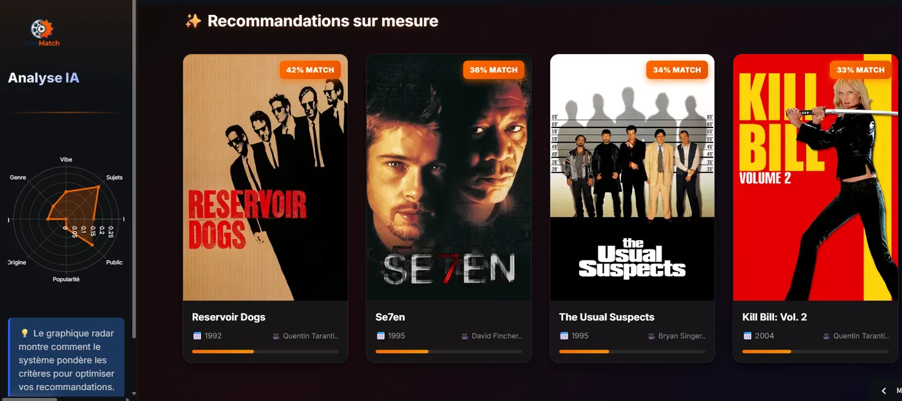
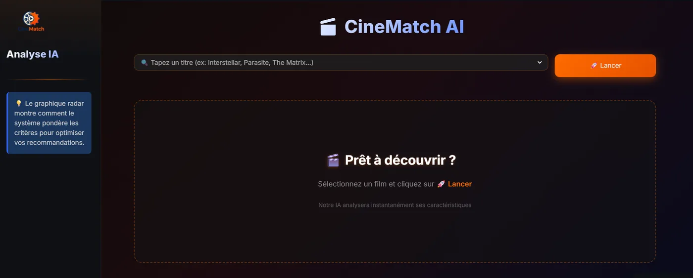
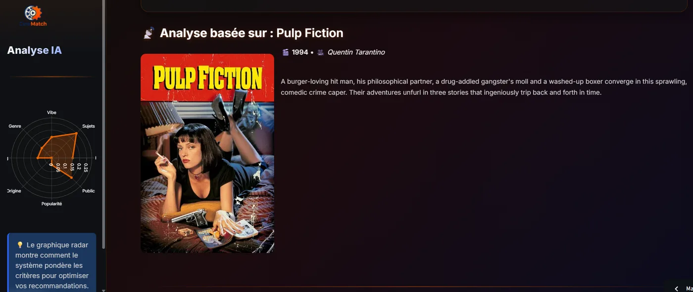

The problem
Keyword filtering (“same genre, same actor”) misses what makes two films feel alike, while pure collaborative filtering fails on films nobody has rated. CineMatch combines both families of signals and stays explainable: for every query, a radar chart shows how much each signal contributed to the ranking.
Example: Pulp Fiction (1994) returns Reservoir Dogs, Se7en, The Usual Suspects and Kill Bill: Vol. 2. Two share its director; the others share its crime and neo-noir tone.

The data
- Metadata and posters from TMDB, starting from the TMDB 5000 dataset, plus about 1,400 recent films.
- Ratings from MovieLens
ml-latest-small, for the audience signal. - Catalogue: 6,203 films from 1916 to 2024, median year 2008. 51 titles are shared by several films, such as two Aladdin.
43% of the catalogue has no collaborative data. For these films, the audience weight is redistributed to the content signals instead of being silently wasted.
Approach
- Selected film i
- Adaptive weights w(i)genre, language, popularity rules
- Collaborative data for i?if not: audience weight → plot, topics, mood
- Weighted sumof 8 pre-computed similarity rows
- Top-kargpartition
- Ranked films+ radar of weights
The eight signals
Each signal is an n × n similarity matrix (n = 6,203 films), stored as float16.
| Signal | What it captures | Construction |
|---|---|---|
| Plot | Plot semantics | all-MiniLM-L6-v2 embeddings of title and overview, cosine similarity |
| Topics | Precise topics | TMDB keywords, bag of words, cosine |
| Mood | Tone and atmosphere | Semantic signal; construction not yet versioned |
| Genre | Category | TMDB genres, bag of words, cosine |
| Cast & crew | Artistic fingerprint | Director (weight ×3) and top-billed cast |
| Origin | Cultural context | Original language and production countries |
| Popularity & era | Era and notoriety | exp(−|Δ|/σ) on popularity (σ = 20) and release year (σ = 10), averaged |
| Audience | Audience taste | Collaborative similarity from MovieLens; construction not yet versioned |
Scoring
For a source film i and a candidate j, the score is a normalized weighted sum of the eight matrices:
The “% MATCH” shown on each card is this normalized score: a relative ranking indicator, not a probability.
Adaptive weights
The weights start from a base profile and are adjusted by simple, readable rules. Pick a type of source film to see how the blend changes; these are the exact values the engine computes.
smart_weights from recommender.py. The grey outline is the base profile.| Condition on the source film | Adjustment | Status |
|---|---|---|
| Animation, or a digit in the title (sequels) | + topics, + audience | Active |
| Horror | + mood (+0.20), + topics, − cast | Active |
| No collaborative data (cold start) | audience weight → plot, topics, mood | Active |
| Non-English original language | + origin (+0.30), − plot | Inactive |
| More than 3,000 votes | + audience, + popularity | Inactive |
The last two rules never trigger: the shipped data has no original_language or vote_count column. Rebuilding the data with these columns re-enables them with no code change.
Implementation
- Pre-computed dense matrices
At 6,203 films the full set is about 600 MB in float16. It buys sub-millisecond queries and a light runtime: no PyTorch or SBERT at serving time. Beyond about 20k films, approximate nearest neighbours (FAISS, HNSW) would replace it.
- Engine separate from the UI
recommender.pyhas no Streamlit import, so the scoring logic is unit-tested on synthetic data and reusable from a notebook or an API. - Rules rather than a learned blender
Transparent and debuggable, which is what makes the radar a faithful explanation rather than a decoration. Learning to rank comes once an evaluation set exists.
- Homonyms handled by index
The search box shows
Title (year)and the engine works on row positions, never on titles. - Caching
The data is loaded once with
st.cache_resource; poster lookups are cached for 24 hours and failures are never cached. - No secret in the code
The TMDB key is read from the environment or Streamlit secrets only. Without a key, a placeholder poster is shown.
The core of a query, from recommender.py:
scores = np.zeros(len(df), dtype=np.float32)
for name, w in weights.items():
if w > 0:
scores += w * matrices[SIGNAL_TO_MATRIX[name]][idx].astype(np.float32)
# k+1 candidates: the source film almost always ranks first
n_cand = min(k + 1, len(scores))
top = np.argpartition(scores, -n_cand)[-n_cand:]
top = top[np.argsort(scores[top])[::-1]]The app


Limits and roadmap
No offline evaluation yet. Quality is judged by inspection. Next: precision@k, recall@k and NDCG on held-out MovieLens ratings, plus an ablation per signal.
- Two weighting rules are inactive, as shown above, which is visible on non-English films.
- Partial pipeline in the repository: the notebook covers 6 of the 8 signals on TMDB 5000; the scripts that built mood and audience, merged the recent films and exported the data are not yet versioned.
- Small catalogue: niche or very recent titles may have weak neighbours.
- Roadmap: weight tuning against an evaluation set, a learning-to-rank blender, diversity re-ranking (MMR), a FAISS index for larger catalogues, an English/French toggle.
Reproduce
git clone https://github.com/Victor-MICHELON/CineMatch-recommender.git
cd CineMatch-recommender
git lfs pull # ~600 MB of similarity matrices
python -m venv .venv && source .venv/bin/activate
pip install -r requirements.txt
export TMDB_API_KEY=your_key # optional, for posters
streamlit run app.pyTests need no data file: pip install -r requirements-dev.txt && pytest. A Dev Container is included for GitHub Codespaces.
Data: TMDB (this product uses the TMDB API but is not endorsed or certified by TMDB), MovieLens (Harper & Konstan, 2015), Sentence-Transformers (Reimers & Gurevych, 2019).
Python, sentence-transformers, NumPy, pandas, Plotly, Streamlit, pytest